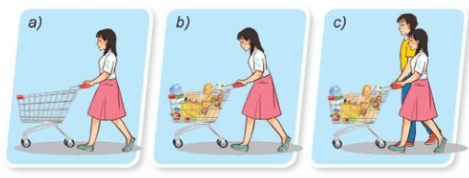
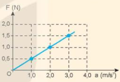
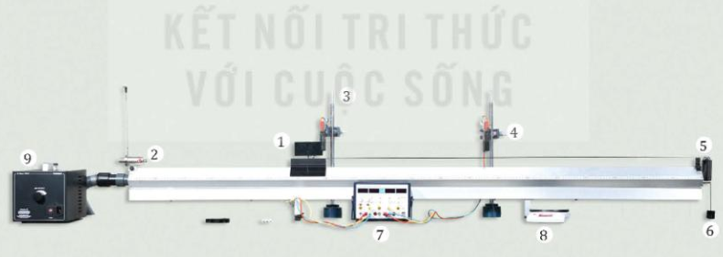
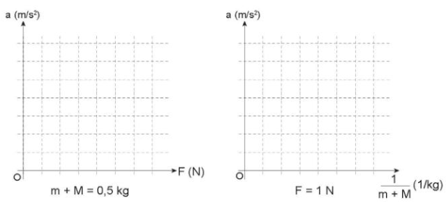

Ngày soạn:
Môn: Vật lí 10 – Bộ sách Kết nối tri thức với cuộc sống
Số tiết: 2 (Tiết 24, 25 theo PPCT)
| Bước thực hiện | Nội dung các bước |
|---|---|
|
HOẠT ĐỘNG 1: KHỞI ĐỘNG (5 phút) |
Mục tiêu: Tạo hứng thú, dẫn dắt học sinh vào bài mới. Nội dung: Học sinh quan sát hình ảnh và trả lời câu hỏi. Sản phẩm: Câu trả lời của học sinh. Tổ chức thực hiện:
 Hình ảnh minh họa: Người đẩy xe chở hàng |
|
HOẠT ĐỘNG 2: HÌNH THÀNH KIẾN THỨC (25 phút) |
Mục tiêu: Hình thành định luật 2 Newton, khái niệm khối lượng và quán tính. Nội dung: Tìm hiểu định luật 2 Newton, khối lượng và quán tính. Sản phẩm: Câu trả lời, kết quả thảo luận, công thức. Tổ chức thực hiện: 1. Định luật 2 Newton
2. Khối lượng và quán tính
 Hình 15.1. Đồ thị biểu diễn mối liên hệ giữa lực và gia tốc |
|
HOẠT ĐỘNG 3: LUYỆN TẬP (10 phút) |
Mục tiêu: Vận dụng định luật 2 Newton để giải bài tập đơn giản. Nội dung: Giải bài tập ví dụ SGK. Sản phẩm: Lời giải của học sinh. Tổ chức thực hiện:
|
|
HOẠT ĐỘNG 4: VẬN DỤNG (5 phút) |
Mục tiêu: Vận dụng kiến thức vào thực tế. Nội dung: Trả lời câu hỏi vận dụng. Sản phẩm: Câu trả lời của học sinh. Tổ chức thực hiện:
|
| Bước thực hiện | Nội dung các bước | ||||||||||||||||||||||||
|---|---|---|---|---|---|---|---|---|---|---|---|---|---|---|---|---|---|---|---|---|---|---|---|---|---|
|
HOẠT ĐỘNG 1: KHỞI ĐỘNG (5 phút) |
Mục tiêu: Tạo tình huống có vấn đề về thí nghiệm minh họa định luật 2 Newton. Nội dung: Quan sát hình ảnh và dự đoán. Sản phẩm: Câu trả lời của học sinh. Tổ chức thực hiện:
 Hình 15.2. Thí nghiệm minh họa định luật 2 Newton |
||||||||||||||||||||||||
|
HOẠT ĐỘNG 2: HÌNH THÀNH KIẾN THỨC (25 phút) |
Mục tiêu: Hiểu được mục đích, dụng cụ và các bước tiến hành thí nghiệm minh họa định luật 2 Newton. Nội dung: Tìm hiểu dụng cụ, tiến hành thí nghiệm, xử lý số liệu. Sản phẩm: Câu trả lời, kết quả thảo luận, bảng số liệu. Tổ chức thực hiện: 1. Dụng cụ thí nghiệm (Hình 15.2)
2. Tiến hành thí nghiệm
3. Bảng số liệu thí nghiệm Bảng 15.1. Bảng ghi kết quả thí nghiệm
Lưu ý: d = 0,5 m là khoảng cách giữa hai cổng quang điện. 4. Xử lý số liệu và kết luận
 Hình 15.3. Đồ thị biểu diễn sự phụ thuộc của gia tốc vào lực và khối lượng |
||||||||||||||||||||||||
|
HOẠT ĐỘNG 3: LUYỆN TẬP (10 phút) |
Mục tiêu: Vận dụng định luật 2 Newton để giải bài tập. Nội dung: Giải bài tập 1, 2, 3, 4 trong SGK trang 67. Sản phẩm: Lời giải của học sinh. Tổ chức thực hiện:
|
||||||||||||||||||||||||
|
HOẠT ĐỘNG 4: VẬN DỤNG (5 phút) |
Mục tiêu: Vận dụng kiến thức vào thực tế và giao nhiệm vụ về nhà. Nội dung: Trả lời câu hỏi vận dụng, giao nhiệm vụ năng lực số. Sản phẩm: Câu trả lời của học sinh, sản phẩm bảng/đồ thị. Tổ chức thực hiện:
|
.................................................................................................................
.................................................................................................................
.................................................................................................................
Duyệt TCM